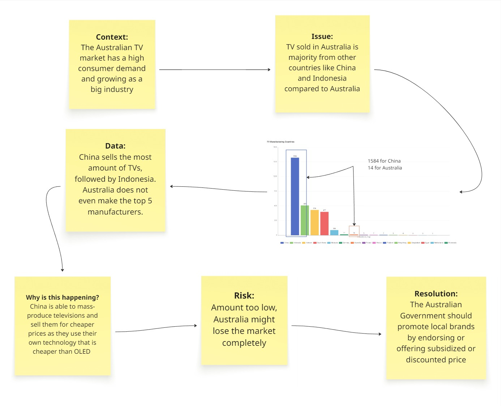

TV Manufacturing Countries
The story drawing here shows the differences between countries that manufacture TVs and how they are able to impact consumers. It is clear that China and Indonesia are leading, but the real question is why? Why are the numbers for the Australian manufacturers so low, and what risk does it pose to them if the trend continues?
The policy makers should work closely with Australian manufacturers to promote TVs made locally by various announcements, events or discounts. This way, the benefit goes both ways that include the consumer as well as the manufacter. If no effort is made to get Australians to buy Australian-manufactured TVs, then it is without a doubt that eventually locally manufactured TVs will cease to exist.
